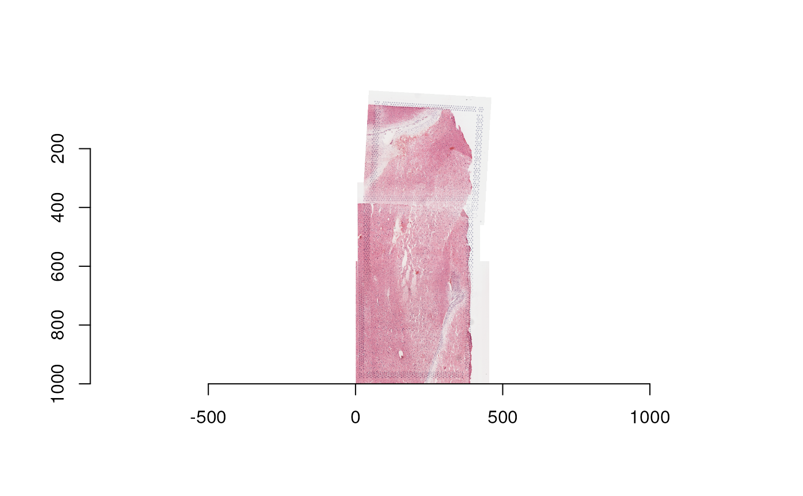

Together, prep_fiji_image() and prep_fiji_coords() process Fiji outputs
and generate one directory per group resembling Spaceranger's
spatial outputs;
in particular, tissue_positions.csv, tissue_lowres_image.png, and
scalefactors_json.json files are created. These functions are necessary to
run in preparation for build_SpatialExperiment().
Usage
prep_fiji_image(sample_info, out_dir, lowres_max_size = 1200)
prep_fiji_coords(sample_info, out_dir)Arguments
- sample_info
A
data.frame()with columnscapture_area,group,fiji_xml_path,fiji_image_path,spaceranger_dir,intra_group_scalar, andgroup_hires_scalef. The last two are made byrescale_fiji_inputs().- out_dir
A
character(1)vector giving a path to a directory to place the output pixel coordinates CSVs. It must exist in advance.- lowres_max_size
An
integer(1)vector: the resolution (number of pixels) of the larger dimension of the output image(s), considered to be "low resolution". The default value of1200assumes that you are stitching together at most a 2 by 2 grid of Visium capture areas, where each has at most 600 pixels on the longest dimension (as is the default in SpaceRanger).
Value
This function returns a character() with the file paths to the
files it created. For prep_fiji_coords(), these are the tissue_positions.csv
files; for prep_fiji_image(), these are the tissue_lowres_image.png and
scalefactors_json.json files.
Details
Given a data.frame() of sample information (sample_info) with
columns capture_area, group, and fiji_xml_path,
expected to have one unique path to Fiji XML output per group, prep_fiji_coords
reads in the pixel coordinates from each capture area's tissue_positions.csv
file from SpaceRanger, and transform using the rotation matrix specified
by Fiji https://imagej.net/software/fiji/. It writes one new tissue_positions.csv
file per group.
After stitching all groups in sample_info with Fiji, images of
various resolutions (pixel dimensions) are left. prep_fiji_image() creates copies
of each image whose largest dimension is lowres_max_size pixels. It
also creates a corresponding scalefactors_json.json file much like
SpaceRanger's.
Functions
prep_fiji_image(): Create low-res images and scale factors from high-res Fiji output imagesprep_fiji_coords(): Apply transform info from Fiji XML output
Examples
sample_info_path = file.path(tempdir(), "sample_info.rds")
if (file.exists(sample_info_path)) {
sample_info <- readRDS(sample_info_path)
} else {
sample_info <- dplyr::tibble(
group = "Br2719",
capture_area = c("V13B23-283_A1", "V13B23-283_C1", "V13B23-283_D1")
)
# Add 'spaceranger_dir' column
sr_dir <- tempdir()
temp <- unzip(
spatialLIBD::fetch_data("visiumStitched_brain_spaceranger"),
exdir = sr_dir
)
sample_info$spaceranger_dir <- file.path(
sr_dir, sample_info$capture_area, "outs", "spatial"
)
# Add Fiji-output-related columns
fiji_dir <- tempdir()
temp <- unzip(
spatialLIBD::fetch_data("visiumStitched_brain_Fiji_out"),
exdir = fiji_dir
)
sample_info$fiji_xml_path <- temp[grep("xml$", temp)]
sample_info$fiji_image_path <- temp[grep("png$", temp)]
## Re-size images and add more information to the sample_info
sample_info <- rescale_fiji_inputs(sample_info, out_dir = tempdir())
saveRDS(sample_info, sample_info_path)
}
spe_input_dir <- tempdir()
out_paths_image <- prep_fiji_image(
sample_info,
out_dir = spe_input_dir, lowres_max_size = 1000
)
out_path_coords <- prep_fiji_coords(sample_info, out_dir = spe_input_dir)
# A "low resolution" stitched image was produced, which has 1000
# pixels in its largest dimension
this_image <- imager::load.image(
file.path(spe_input_dir, "Br2719", "tissue_lowres_image.png")
)
dim(this_image)
#> [1] 461 1000 1 3
library("imager")
#> Loading required package: magrittr
#>
#> Attaching package: ‘magrittr’
#> The following object is masked from ‘package:GenomicRanges’:
#>
#> subtract
#>
#> Attaching package: ‘imager’
#> The following object is masked from ‘package:magrittr’:
#>
#> add
#> The following objects are masked from ‘package:SummarizedExperiment’:
#>
#> resize, width
#> The following object is masked from ‘package:Biobase’:
#>
#> channel
#> The following objects are masked from ‘package:GenomicRanges’:
#>
#> resize, width
#> The following objects are masked from ‘package:IRanges’:
#>
#> resize, width
#> The following object is masked from ‘package:S4Vectors’:
#>
#> width
#> The following object is masked from ‘package:BiocGenerics’:
#>
#> width
#> The following objects are masked from ‘package:stats’:
#>
#> convolve, spectrum
#> The following object is masked from ‘package:graphics’:
#>
#> frame
#> The following object is masked from ‘package:base’:
#>
#> save.image
plot(this_image)

# 'prep_fiji_image' produced an image and scalefactors
out_paths_image
#> [1] "/tmp/RtmppTuXYz/Br2719/tissue_lowres_image.png"
#> [2] "/tmp/RtmppTuXYz/Br2719/scalefactors_json.json"
# 'prep_fiji_coords' produced a file of spatial coordinates for the
# stitched Br2719
readr::read_csv(out_path_coords)
#> Rows: 14976 Columns: 6
#> ── Column specification ────────────────────────────────────────────────────────
#> Delimiter: ","
#> chr (1): key
#> dbl (5): in_tissue, array_row, array_col, pxl_row_in_fullres, pxl_col_in_ful...
#>
#> ℹ Use `spec()` to retrieve the full column specification for this data.
#> ℹ Specify the column types or set `show_col_types = FALSE` to quiet this message.
#> # A tibble: 14,976 × 6
#> key in_tissue array_row array_col pxl_row_in_fullres pxl_col_in_fullres
#> <chr> <dbl> <dbl> <dbl> <dbl> <dbl>
#> 1 ACGCCTGA… 1 0 0 52935. 1873.
#> 2 TACCGATC… 1 1 1 52797. 2115.
#> 3 ATTAAAGC… 1 0 2 52658. 1873.
#> 4 GATAAGGG… 1 1 3 52519. 2115.
#> 5 GTGCAAAT… 1 0 4 52381. 1874.
#> 6 TGTTGGCT… 1 1 5 52242. 2115.
#> 7 GCATCCTC… 1 0 6 52104. 1874.
#> 8 GCGAGGGA… 1 1 7 51965. 2115.
#> 9 TGGTACCG… 1 0 8 51826. 1874.
#> 10 GCGCGTTT… 1 1 9 51688. 2115.
#> # ℹ 14,966 more rows